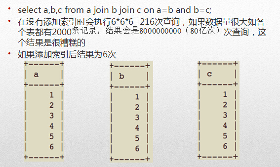

いわゆるインデックスとは、特定のMySQLフィールドに対して特定のアルゴリズムでソートを行うことです。たとえば、二分木アルゴリズムやハッシュアルゴリズムです。ハッシュアルゴリズムは、特徴値を生成し、その特徴値に基づいて高速に検索します。そして、最も多く使われ、MySQLのデフォルトでもあるのは二分木アルゴリズムのBTREEです。BTREEアルゴリズムでインデックスを設定したフィールドでは、たとえば20行をスキャンするだけで、BTREE使用前に2^20行をスキャンしていたのと同じ結果が得られます。
Explainによるクエリ最適化チェック
EXPLAINは開発者がSQLの問題を分析するのに役立ちます。explainは、MySQLがインデックスを使用してSELECTステートメントやテーブル結合を処理する方法を示します。これにより、より良いインデックスを選択し、より最適化されたクエリステートメントを作成するのに役立ちます。
使用方法は、SELECTステートメントの前にEXPLAINを付けるだけです：
Explain select * from blog where false;
MySQLはクエリを実行する前に、送信された各SQLを分析し、インデックスを使用するか全テーブルスキャンを行うかを決定します。たとえば、「SELECT * FROM blog WHERE false」を送信した場合、MySQLはクエリ操作を実行しません。SQLアナライザによる分析の結果、MySQLは条件に一致する行が存在しないことをすでに把握しているからです。
例
mysql> EXPLAIN SELECT `birday` FROM `user` WHERE `birthday` < "1990/2/2"; -- 结果： id: 1 select_type: SIMPLE -- 查询类型（简单查询、联合查询、子查询） table: user -- 显示这一行的数据是关于哪张表的 。 type: range -- 区间索引（在小于1990/2/2区间的数据)，这是重要的列，显示连接使用了何种类型。从最好到最差的连接类型为system > const > eq_ref > ref > fulltext > ref_or_null > index_merge > unique_subquery > index_subquery > range > index > ALL,const代表一次就命中，ALL代表扫描了全表才确定结果。一般来说，得保证查询至少达到range级别,最好能达到ref。 possible_keys: birthday -- 指出MySQL能使用哪个索引在该表中找到行。如果是空的，没有相关的索引。这时要提高性能，可通过检验WHERE子句，看是否引用某些字段，或者检查字段不是适合索引。 key: birthday -- 实际使用到的索引。如果为NULL，则没有使用索引。如果为primary的话，表示使用了主键。 key_len: 4 -- 最长的索引宽度。如果键是NULL，长度就是NULL。在不损失精确性的情况下，长度越短越好。 ref: const -- 显示哪个字段或常数与key一起被使用。 rows: 1 -- 这个数表示mysql要遍历多少数据才能找到，在innodb上是不准确的。 Extra: Using where; Using index -- 执行状态说明，这里可以看到的坏的例子是Using temporary和Using
select_type
- simple: 単純なSELECT（UNIONやサブクエリを使用しない）。
- primary: 最も外側のSELECT。
- union: UNION内の2番目以降のSELECTステートメント。
- dependent union: UNION内の2番目以降のSELECTステートメントで、外部のクエリに依存する。
- union result: UNIONの結果。
- subquery: サブクエリ内の最初のSELECT。
- dependent subquery: サブクエリ内の最初のSELECTで、外部のクエリに依存する。
- derived: 導出テーブルのSELECT（FROM句のサブクエリ）。
その他の説明
- Distinct: MYSQLが結合に一致する行を見つけたら、それ以上検索しなくなります。
- Not exists: MySQLはLEFT JOINを最適化し、LEFT JOINの条件に一致する行を見つけると、それ以上検索しなくなります。
- Range checked for each Record (index map:#): 理想的なインデックスが見つからないため、前のテーブルからのすべての行組み合わせに対して、MySQLはどのインデックスを使用するかをチェックし、それを使用してテーブルから行を返します。これはインデックスを使用する結合の中でも最も遅いものの1つです。
- Using filesort: これが表示された場合、クエリの最適化が必要です。MySQLは、返される行をどのようにソートするかを判断するために追加の手順を実行する必要があります。結合タイプと、ソートキー値および条件に一致する全行を格納する行ポインタに基づいて、すべての行をソートします。
- Using index: 列データは、実際の行を読み取らずにインデックス内の情報のみを使用してテーブルから返されます。これは、テーブルに対する要求されたすべての列が同じインデックスの一部である場合に発生します。
- Using temporary: これが表示された場合、クエリの最適化が必要です。ここでMySQLは結果を格納するための一時テーブルを作成する必要があります。これは通常、GROUP BYではなく、異なる列セットに対してORDER BYを実行するときに発生します。
- Where used: WHERE句を使用して、どの行が次のテーブルと一致するか、またはユーザーに返されるかを制限します。テーブル内のすべての行を返したくない場合で、結合タイプがALLまたはindexの場合に発生します。またはクエリに問題があります。異なる結合タイプの説明（効率の高い順に並べています）。
- system: テーブルに1行しかないsystemテーブル。これはconst結合タイプの特別なケースです。
- const: テーブル内の1つのレコードがこのクエリに一致する場合（インデックスは主キーまたはユニークインデックス）。行が1つしかないため、この値は実際には定数です。MySQLはこの値を先に読み込んで定数として扱います。
- eq_ref: 結合では、MySQLはクエリ実行時に、前のテーブルの各レコードの結合に対して、テーブルから1つのレコードを読み取ります。クエリでインデックスが主キーまたはユニークキーとして使用される場合に使われます。
- ref: この結合タイプは、クエリがユニークキーや主キーではないキー、またはそれらのタイプの一部（たとえば、左端のプレフィックスを利用する場合）を使用した場合にのみ発生します。前のテーブルの各行の結合に対して、すべてのレコードがテーブルから読み出されます。このタイプはインデックスに一致するレコードの数に大きく依存し、少なければ少ないほど良いです。
- range: この結合タイプは、インデックスを使用して範囲内の行を返します。たとえば、>や<を使って検索する場合に発生します。
- index: この結合タイプは、前のテーブルの各レコードの結合に対して完全スキャンを実行します（インデックスは通常テーブルデータより小さいため、ALLよりも優れています）。
- ALL: この結合タイプは、前のテーブルの各レコードの結合に対して完全スキャンを実行します。これは一般に良くないので、できるだけ避けるべきです。
ここでtype:
- Only indexの場合、情報はインデックスツリー内の情報のみを使用して取得されたことを意味し、テーブル全体をスキャンするよりも高速です。
- where usedの場合、WHERE制約が使用されています。
- impossible whereの場合、WHEREが不要であることを示し、通常は何も見つからないことを意味します。
- この情報にUsing filesortまたはUsing temporaryが表示されている場合、処理は非常に重くなります。WHEREとORDER BYのインデックスはしばしば両立できません。WHEREに基づいてインデックスを決定すると、ORDER BYのときに必然的にUsing filesortが発生します。そのため、先にフィルタリングしてからソートする方が得策か、先にソートしてからフィルタリングする方が得策かを検討する必要があります。
インデックスの種類
UNIQUEユニークインデックス
同じ値は許可されませんが、NULL値は許可されます。
INDEX通常のインデックス
同じインデックス内容を許可します。
PRIMARY KEY主キーインデックス
同じ値を許可せず、NULL値も許可できません。1つのテーブルに持てるprimary_keyインデックスは1つだけです。
fulltext index 全文インデックス
上記の3つのインデックスはすべて列の値に対して機能しますが、全文インデックスは値の中の特定の単語（たとえば記事の中のある単語）に対して機能します。しかし、あまり役に立ちません。なぜなら、MyISAMと英語のみがサポートされ、効率もお世辞にも良いとは言えないからです。ただし、coreseekやxunsearchなどのサードパーティ製アプリケーションを使用してこの要件を満たすことができます。
インデックスのCURD
インデックスの作成
ALTER TABLE
テーブル作成後に追加する場合に適しています。
ALTER TABLE テーブル名 ADD インデックスタイプ (unique, primary key, fulltext, index)[インデックス名](フィールド名)
ALTER TABLE `table_name` ADD INDEX `index_name` (`column_list`) -- 索引名，可要可不要；如果不要，当前的索引名就是该字段名。 ALTER TABLE `table_name` ADD UNIQUE (`column_list`) ALTER TABLE `table_name` ADD PRIMARY KEY (`column_list`) ALTER TABLE `table_name` ADD FULLTEXT KEY (`column_list`)
CREATE INDEX
CREATE INDEXはテーブルに通常のインデックスまたはUNIQUEインデックスを追加できます。
--例：只能添加这两种索引 CREATE INDEX index_name ON table_name (column_list) CREATE UNIQUE INDEX index_name ON table_name (column_list)
また、テーブル作成時に追加することもできます：
CREATE TABLE `test1` ( `id` smallint(5) UNSIGNED AUTO_INCREMENT NOT NULL, -- 注意，下面创建了主键索引，这里就不用创建了 `username` varchar(64) NOT NULL COMMENT '用户名', `nickname` varchar(50) NOT NULL COMMENT '昵称/姓名', `intro` text, PRIMARY KEY (`id`), UNIQUE KEY `unique1` (`username`), -- 索引名称，可要可不要，不要就是和列名一样 KEY `index1` (`nickname`), FULLTEXT KEY `intro` (`intro`) ) ENGINE=MyISAM AUTO_INCREMENT=4 DEFAULT CHARSET=utf8 COMMENT='后台用户表';
インデックスの削除
DROP INDEX `index_name` ON `talbe_name` ALTER TABLE `table_name` DROP INDEX `index_name` -- 这两句都是等价的,都是删除掉table_name中的索引index_name; ALTER TABLE `table_name` DROP PRIMARY KEY -- 删除主键索引，注意主键索引只能用这种方式删除
インデックスの確認
show index from tablename;
インデックスの変更
変更なんて意味がない、削除して作り直せばそれで十分です。
インデックス作成のテクニック
- カーディナリティ（重複度）の高い列にインデックスを作成します。
- データ列において重複しない値出現する個数が高ければ高いほど、カーディナリティは高くなります。
- たとえば、データテーブルに8行のデータ a,b,c,d,a,b,c,d がある場合、このテーブルのカーディナリティは4です。
- カーディナリティの高い列にインデックスを作成する必要があります。たとえば、性別と年齢では、年齢のカーディナリティの方が性別より高くなります。
- 性別のような列はカーディナリティが低すぎるため、インデックスの作成には適していません。
- where、on、group by、order byに出現する列にインデックスを使用します。
- 小さいデータ列にインデックスを使用すると、インデックスファイルが小さくなり、メモリ内に多くのインデックスキーをロードできます。
- 長い文字列にはプレフィックスインデックスを使用します。
- インデックスを作成しすぎないでください。追加のディスク領域を消費するだけでなく、DML操作の速度に大きな影響を与えます。増加・削除・変更のたびにインデックスを再構築する必要があるからです。
- 複合インデックスを使用すると、ファイルのインデックスサイズを削減でき、使用時の速度は複数の単一列インデックスよりも優れています。
複合インデックスとプレフィックスインデックス
注意：この2つの呼び方は、インデックス作成テクニックの呼び方であり、インデックスの種類ではありません。
複合インデックス
MySQLの単一列インデックスと複合インデックスの違いは、一体何でしょうか？
両者を具体的に比較するために、まずテーブルを作成します：
CREATE TABLE `myIndex` ( `i_testID` INT NOT NULL AUTO_INCREMENT, `vc_Name` VARCHAR(50) NOT NULL, `vc_City` VARCHAR(50) NOT NULL, `i_Age` INT NOT NULL, `i_SchoolID` INT NOT NULL, PRIMARY KEY (`i_testID`) );
テーブルにはすでに1000件のデータがあるとします。この10000件のレコードの中に、vc_Name="erquan" のレコードが5件、七上八下（ランダムに）散らばっています。ただし、city、age、schoolの組み合わせはそれぞれ異なります。このT-SQLを見てください：
SELECT `i_testID` FROM `myIndex` WHERE `vc_Name`='erquan' AND `vc_City`='郑州' AND `i_Age`=25; -- 关联搜索;
まず、MySQLの単一列インデックスの作成を検討します：
vc_Name列にインデックスを作成しました。T-SQLを実行すると、MySQLはすぐにvc_Name=erquanの5件のレコードに目標を絞り込み、取り出して中間結果セットに入れます。この結果セット内で、まずvc_Cityが「鄭州」でないレコードを除外し、次にi_Ageが25でないレコードを除外し、最後に唯一の条件に合うレコードを絞り込みます。vc_Nameにインデックスを作成したため、クエリ時にMySQLはテーブル全体をスキャンする必要がなくなり効率は向上しますが、要件にはまだ程遠いです。同様に、vc_Cityとi_Ageにそれぞれ作成したMySQL単一列インデックスの効率も似たようなものです。
MySQLの効率をさらに引き出すには、複合インデックスの作成を検討する必要があります。つまり、vc_Name、vc_City、i_Ageを1つのインデックスにまとめるのです：
ALTER TABLE `myIndex` ADD INDEX `name_city_age` (vc_Name(10),vc_City,i_Age);
テーブル作成時、vc_Nameの長さは50ですが、ここではなぜ10を使うのでしょうか？これは後述する接頭辞インデックス（プレフィックスインデックス）のためです。一般的に名前の長さは10を超えないため、これによりインデックスの検索速度が速くなり、インデックスファイルのサイズも小さくなり、INSERTの更新速度も向上します。
T-SQLを実行するとき、MySQLはレコードを一切スキャンすることなく唯一のレコードに到達できます！
もしvc_Name、vc_City、i_Ageにそれぞれ単一列インデックスを作成し、このテーブルに3つの単一列インデックスを持たせた場合、クエリ時の効率は上記の複合インデックスと同じでしょうか？答えは大きく異なり、複合インデックスよりもはるかに劣ります。このとき3つのインデックスがありますが、MySQLはその中で最も効率的と思われる単一列インデックスのみを使用でき、他の2つは使用できません。つまり、やはり全テーブルスキャンのプロセスになります。
このような複合インデックスを作成することは、実際にはそれぞれ以下のインデックスを作成することに相当します：
- vc_Name,vc_City,i_Age
- vc_Name,vc_City
- vc_Name
このような3つの複合インデックスです！なぜvc_City、i_Ageなどの複合インデックスがないのでしょうか？これはMySQLの複合インデックスにおける「最左接頭辞（左端プレフィックス）」の結果です。簡単に言うと、左端からしか組み合わせないということです。この3列を含むクエリであれば必ずこの複合インデックスが使われるわけではありません。以下のT-SQLは使われます：
SELECT * FROM myIndex WHREE vc_Name=”erquan” AND vc_City=”郑州” SELECT * FROM myIndex WHREE vc_Name=”erquan”
一方、以下のものは使われません：
SELECT * FROM myIndex WHREE i_Age=20 AND vc_City=”郑州” SELECT * FROM myIndex WHREE vc_City=”郑州”
つまり、name_city_age(vc_Name(10),vc_City,i_Age)は左から右へインデックスを作成します。左端の接頭辞インデックスがなければ、MySQLはインデックスによるクエリを実行しません。
接頭辞インデックス（プレフィックスインデックス）
インデックス列の長さが長すぎると、その列のインデックス作成時に非常に大きなインデックスファイルが生成され、操作が不便になります。その場合は接頭辞インデックス方式を使用できます。接頭辞インデックスは適切なポイントに制御すべきで、0.31の黄金値に抑えればよいです（この値より大きければ作成できます）。
SELECT COUNT(DISTINCT(LEFT(`title`,10)))/COUNT(*) FROM Arctic; — この値が0.31より大きければ接頭辞インデックスを作成できます。Distinctで重複を除去します。ALTER TABLE `user` ADD INDEX `uname`(title(10)); — 接頭辞インデックスを追加するSQLで、人名のインデックスを10に設定します。これによりインデックスファイルのサイズを減らし、インデックスの検索速度を速められます。
どのようなSQLがインデックスを使わないのか
これらのインデックスを使わないSQLはできるだけ避けるべきです
SELECT `sname` FROM `stu` WHERE `age`+10=30;-- 不会使用索引，因为所有索引列参与了计算 SELECT `sname` FROM `stu` WHERE LEFT(`date`,4) <1990; -- 不会使用索引，因为使用了函数运算，原理与上面相同 SELECT * FROM `houdunwang` WHERE `uname` LIKE'后盾%' -- 走索引 SELECT * FROM `houdunwang` WHERE `uname` LIKE "%后盾%" -- 不走索引 -- 正则表达式不使用索引，这应该很好理解，所以为什么在SQL中很难看到regexp关键字的原因 -- 字符串与数字比较不使用索引; CREATE TABLE `a` (`a` char(10)); EXPLAIN SELECT * FROM `a` WHERE `a`="1" -- 走索引 EXPLAIN SELECT * FROM `a` WHERE `a`=1 -- 不走索引 select * from dept where dname='xxx' or loc='xx' or deptno=45 --如果条件中有or，即使其中有条件带索引也不会使用。换言之，就是要求使用的所有字段，都必须建立索引，我们建议大家尽量避免使用or 关键字 -- 如果mysql估计使用全表扫描要比使用索引快，则不使用索引
複数テーブルを関連付ける際のインデックス効率
- SELECT `sname` FROM `stu` WHERE LEFT(`date`,4) <1990; — インデックスは使用されません。関数演算を使用しているためで、原理は上記と同じです。
- SELECT * FROM `houdunwang` WHERE `uname` LIKE '后盾%' — インデックスを使用します
- SELECT * FROM `houdunwang` WHERE `uname` LIKE '%后盾%' — インデックスを使用しません

上の図からわかるように、すべてのテーブルのtypeがallであり、全テーブルスキャンを意味します。つまり6 6 6で、合計216回の走査クエリが実行されました。
最初のテーブルが全テーブルスキャンであること（必須であり、これを使って他のテーブルと関連付ける）を除き、残りはrange（インデックス範囲取得）です。つまり6+1+1+1で、合計9回の走査クエリで済みます。
そのため、複数テーブルのJOINでは、JOINするテーブル数をできるだけ少なくすることをお勧めします。うっかりするとデカルト積の恐ろしいスキャンになるからです。また、LEFT JOINをできるだけ使い、少ないテーブルを基準に多くのテーブルを関連付けることをお勧めします。JOINを使用する場合、最初のテーブルは必ず全スキャンされるため、少ないテーブルを基準にすれば、このスキャン回数を減らせます。
インデックスの欠点
闇雲にインデックスを作成せず、クエリ操作が頻繁な列にのみインデックスを作成してください。インデックスを作成するとクエリ操作は速くなりますが、追加・削除・更新操作の速度は低下します。これらの操作を実行する際に、インデックスファイルの並べ替えや更新も同時に行われるためです。
しかし、インターネットアプリケーションでは、クエリ文はDML文よりもはるかに多く、80%〜90%を占めることもあるため、あまり気にしなくても構いません。ただ、大規模データをインポートする際は、先にインデックスを削除し、データを一括挿入してから、最後にインデックスを追加すればよいです。
クリックしてノートを共有
<p style="font-size:14px;">ノートは本記事の内容の拡張である必要があります！</p><br> <p style="font-size:12px;"><a href="../tougao.html" target="_blank">記事の投稿は、ここをクリックしてください</a></p> <p style="font-size:14px;"><a href="./runoob-user-test-intro.html" target="_blank">登録招待コードの取得方法</a></p> <h3 class="text-muted"><i class="fa fa-info-circle" aria-hidden="true"></i> ノートを共有する前に<a href=".." class="runoob-pop">ログイン</a>が必要です！</h3> <p><a href="./runoob-user-test-intro.html" target="_blank">登録招待コードの取得方法</a></p>